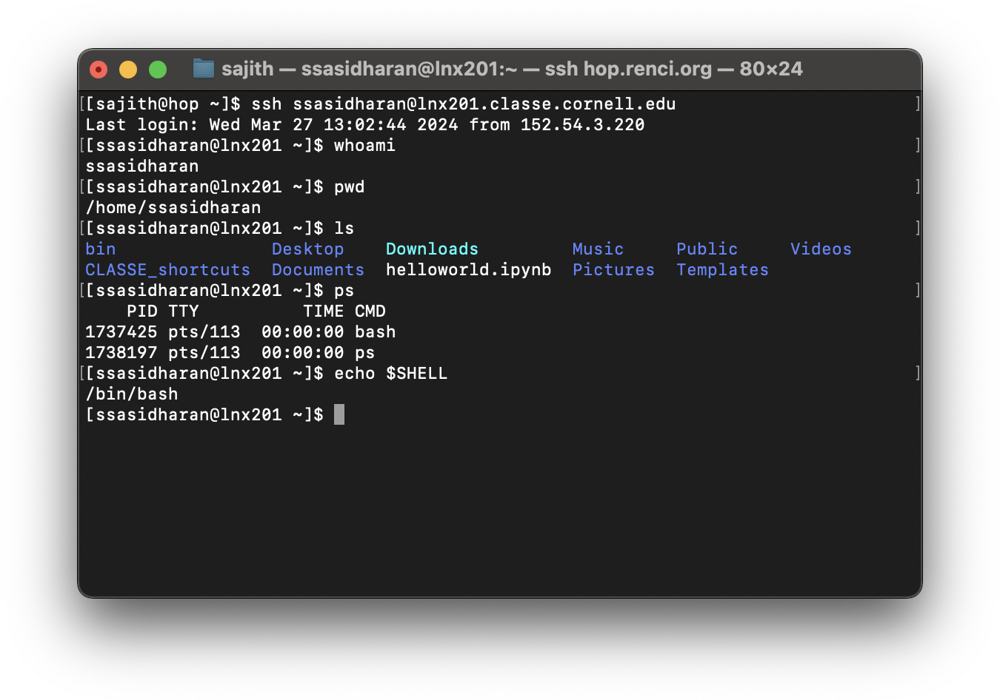
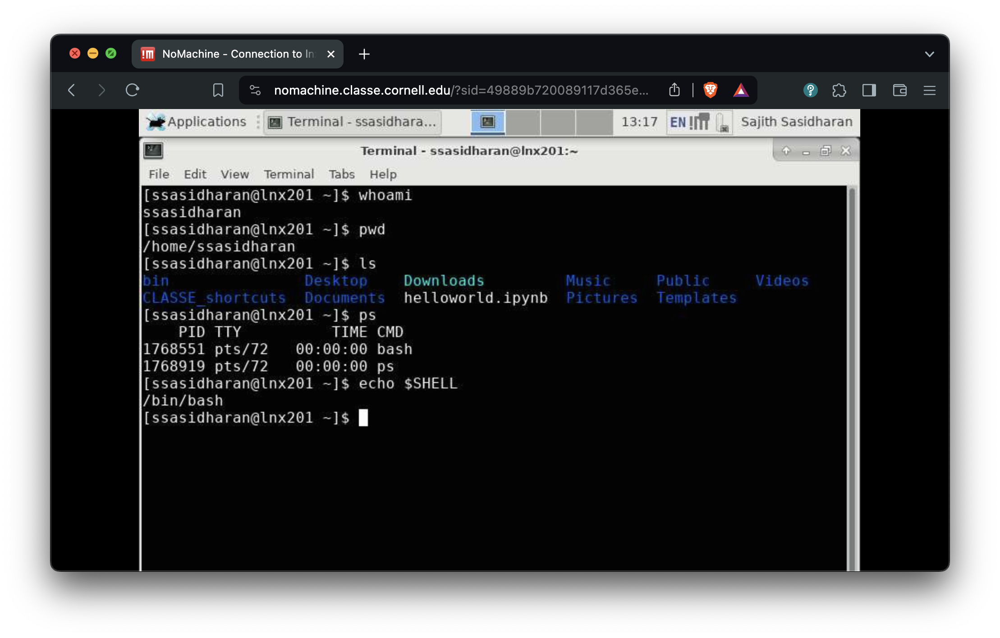

Systems Fundamentals
Linux, command line, scripting
Anirban Mandal, Erik Scott, Sajith Sasidharan (RENCI, UNC Chapel Hill)
Ewa Deelman, Karan Vahi, Mats Rynge (ISI, USC)
Matthew Miller, Werner Sun, Peter Ko, Kelly Nygren, Keara Soloway, Rolf Verberg (CHESS, Cornell)
Brandon Sorge (IUPUI)
Preliminaries
- Who are you people?
- https://xcitecourse.org/theme2/sf100/
- Getting into CLASSE Linux systems
Assumptions
You have your CLASSE accounts set up.
- Talk to CLASSE staff otherwise!
Options:
- Use
ssh - Use NoMachine
- Use JupyterLab
- Use
Use SSH
ssh ${username}@lnx201.classe.cornell.edu
- Use terminal or iTerm on macOS.
- Use whichever terminal you want on Linux.
- Use PuTTY (https://putty.org/) on Windows.
Use NoMachine
Use JupyterLab

Linux, command line, etc.
Linux
- A popular operating system.
- (Actually an OS kernel, plus userland from various other projects. But those are details…)
- Unix-like, which traces back to 1969, therefore has accumulated quirks.
- Expect “hysterical raisins”.
lnx201
- The Linux host we’ll be using is
lnx201.classe.cornell.edu. - Runs a distribution called Scientific Linux.
- Good enough for general use.
- Do not run anything resource heavy on
lnx201.- “Heavy” in terms CPU, memory, network usage etc.
lnx201is a shared resource.
- There is a Compute Farm to run heavy things.
The command line
- You will type commands in a shell, at the shell prompt, hit enterenter key, and then things happen.
Commands
Commands are either programs or shell builtins.
Use one of these commands to read documentation:
man ${command}info ${command}- or
${command} --help(sometimes!)
The shell
- A program that accepts commands, and passes those commands to the OS to execute.
- A popular shell is
bash, which is the default onlnx201.
Bash
- “Bourne-again shell”
- Based on an earlier Bourne shell, thus the “again”.
- Developed by the GNU project.
- On
lnx201,/bin/bashis the program.
- For documentation:
info bashorman bash.
Bash niceties: history and completion
- You do not have to re-type commands that you have used in the past!
- Use upup and downdown arrow keys to go back and forth in your command history.
- Use Ctrl-RCtrl-R (Control+R) to “search” command history.
- Use
historycommand to list your shell history.
- Use tabtab key for command completion, after typing a few characters.
Files and directories
Unix slogan: Everything is a file!
Some helpful commands
| Command | Task | Example Syntax |
|---|---|---|
ls |
list the files in a directory | ls [/tmp] |
cd |
move into a directory | cd [/tmp] |
pwd |
show curent working directory | pwd |
cp |
copy a file to into another directory, or make a copy with a different name | cp [file.txt] [/tmp/file.txt] |
cp -r |
copy a folder to into another directory | cp [file.txt] [/tmp/file.txt] |
mv |
rename or move a file into another directory | mv [file.txt] [file1.txt] |
rm |
delete a file | rm [file.txt] |
rm -r |
remove a directory, recursively | rm -r [dir] |
mkdir |
create a directory | mkdir [dir] |
find |
find a file | find [/tmp] -name [file] |
grep |
search for a text pattern inside a file | grep [text] [/tmp/file.txt] |
less |
to view the text of a text file, one screen at a time | less [/tmp/file.txt] |
exit |
exit and logout of a Terminal (Terminal-xfce4) session | exit |
Directory navigation
[ssasidharan@lnx201 ~]$ tree -d -L 1 /
/
├── bin -> usr/bin
├── boot
├── cdat
├── cifs
├── cvmfs
├── dev
├── etc
├── home
├── lib -> usr/lib
├── lib64 -> usr/lib64
├── media
├── misc
├── mnt
├── net
├── nfs
├── opt
├── proc
├── root
├── run
├── sbin -> usr/sbin
├── srv
├── sys
├── tmp
├── usr
└── var
25 directoriesYour home directory
- You have a “home” directory.
- You can write your files and create directories here.
- Usually, and on
lnx201, this will be/home/$USER- Also known as
$HOME
- Also known as
Those $WHATEVER things
- What are
$HOME,$USER,$PATH,$SHELL, etc.? - They are called environment variables, or env vars.
- Env vars are pieces of information maintained by the shell.
- Programs can use them during execution.
- Use
printenvorenvcommand to list them.
The current working directory
- At any time in the shell, you are “inside” a single directory, called the current working directory.
- When you do
ls, files in current working directory will be listed, etc.
- When you do
- When you log in, your current working directory will be your home directory:
/home/$USERaka$HOME. - You will use
cd(change directory) to move around. - Use the command
pwdto find where you are.- Or
echo $PWD.
- Or
Absolute and relative paths
File/folder names are also referred to as paths.
- Absolute path names begin with the root directory,
/.- Example:
/home/ssasidharan/Documents/hello.txt
- Example:
- Relative paths start with the working directory.
- Example:
./Documents/hello.txt(or justDocuments/hello.txt) when I’m in my home directory.
- Example:
Some fun facts about file names
- Names that begin with “.” are “hidden”.
- They are omitted from directory listing when you do
ls. - Do
ls -a(orls --all) to list them.
- They are omitted from directory listing when you do
.and..are special directory names..stands for the current directory...stands for the directory above the current directory.
Some more fun facts about file names
- File and directory names are case sensitive.
- Depends on filesystem, but that is a detail.
- It is better to avoid spaces in file names, because they are a hassle.
- Use
_(underscore character) instead (example:file_name), or CamelCase (example:FileName). - Quote paths within
"and"if they happen to have spaces, or “escape” each space with\.
- Use
Wildcards
Some characters are given special treatment:
*matches any set of characters.
?matches any one character.
Standard input, output, and error
- Input is read from standard input (or
stdin). - Output is written to standard output (or
stdout). - Error messages are written to standard error (or
stderr).
Note
They are files too: /dev/stdin, /dev/stdout, and /dev/stderr.
I/O redirection
You can redirect stdout to a file with > operator:
Or append with >>:
To direct a file to a programs input, use < operator:
Pipes
- Using the
|(“pipe”) operator, you can “chain” programs such that one programs output is another programs input:
- You can create longer pipes:
Users and Groups
You belong (to groups)
Your account belongs to several groups:
Permissions and ownership
Do a “long” file listing (with ls -l) and behold:
$ ls -l
total 8
drwxr-xr-x 2 ssasidharan chess 44 May 8 10:42 bin
drwxr-xr-x 2 ssasidharan chess 144 Mar 12 00:27 CLASSE_shortcuts
drwxr-xr-x 2 ssasidharan chess 52 Apr 2 00:27 Desktop
drwxr-xr-x 2 ssasidharan chess 28 Apr 2 00:27 Documents
lrwxrwxrwx 1 ssasidharan chess 31 Mar 26 15:21 Downloads -> /cdat/tem/ssasidharan/Downloads
-rw-r--r-- 1 ssasidharan chess 54 Jun 2 12:38 hello.sh
drwxr-xr-x 2 ssasidharan chess 28 Apr 2 00:27 Music
drwxr-xr-x 2 ssasidharan chess 28 Apr 2 00:27 Pictures
drwxr-xr-x 2 ssasidharan chess 28 Apr 2 00:27 Public
drwxr-xr-x 2 ssasidharan chess 28 Apr 2 00:27 Templates
drwxr-xr-x 2 ssasidharan chess 28 Apr 2 00:27 VideosWhat do those characters mean?
Changing permissions
- Use
chmodcommand to change file mode bits (the first column in the previous listing).
[ssasidharan@lnx201 ~]$ chmod +x test.sh
[ssasidharan@lnx201 ~]$ ls -l test.sh
-rwxr-xr-x 1 ssasidharan chess 0 Mar 28 13:39 test.sh
[ssasidharan@lnx201 ~]$ chmod -x test.sh
[ssasidharan@lnx201 ~]$ ls -l test.sh
-rw-r--r-- 1 ssasidharan chess 0 Mar 28 13:39 test.sh- Use
chownandchgrpcommands to change owner and group (the third and fourth columns in the previous listing).- Probably not immediately useful; just know that they exist.
Processes
Listing processes
- List running processes using
pscommand:
The four columns:
PIDis process id.TTYis the terminal associated with the process.TIMEis the elapsed CPU time for the process.CMDis the command that created the process.
Background and foreground processes
- Some processes run in the foreground:
- They read input, write output, etc.
- They are “attached” to a terminal.
- Background processes, well, run in the background. Send things to the background with
&:
- Bring a background process to foreground using
fgcommand, and terminate it using Ctrl-CCtrl-C:
Terminating processes
kill PIDcommand to end one process.killallcommand to end many processes.- You can’t
killother user’s processes.
- You can’t
Other tools of the trade
Text editors
Many choices! Use:
- Emacs
- Vim
- Nano
- JupyterLab
Terminal multiplexers
screen and tmux are two options. Here’s tmux.
Shell scripts
Hello world!
- 1
- The “shebang”
- 2
- A comment.
- 3
- An actual line of code.
- Make the thing executable with
chmod +x hello.sh - Run the thing with
./hello.sh
Other things
Bash supports a programming language with:
ifstatementsfor,while,untilstatements- functions
- et cetera.
- Take a peek at
/etc/bashrcand$HOME/.bashrcfor a taste
BUT
- This is not really in scope of this presentation.
Some resources
A cheat sheet
(Via Stephen Turner.)
Resources elsewhere
- The Linux Command Line, A Complete Introduction by William E. Shotts, Jr. The book is freely available under a Creative Commons license, and contains a good discussion about shell scripting.
- The Unix Programming Environment by Brian W. Kernighan and Rob Pike. Old classic, still useful. Places things in a historical context.
- Shell Tools and Scripting module of MIT “The Missing Semester of Your CS Education” class.
Other resources
- The Internet is pretty great. Use it.
- However: DO NOT trust everything you read on the Internet.
- Do not copy and paste commands from the Internet indiscriminately.
- Understand how things work, and then use it.
Fin!
https://xcitecourse.org/theme2/sf100/
Contributions are welcome!
Supported by the NSF awards OAC-2320373, OAC-2320374, and OAC-2320375.